การทดลองหาค่าความจุของตัวเก็บประจุไฟฟ้า#
บทความนี้นำเสนอวิธีการวัดค่าความจุของตัวเก็บประจุไฟฟ้า โดยใช้บอร์ดไมโครคอนโทรลเลอร์ Arduino (เช่น Uno หรือ Nano) และสาธิตการเขียนโปรแกรมควบคุมการอัดและคายประจุไฟฟ้า และจับเวลาในการช่วงเวลาที่มีการคายประจุเพื่อนำไปคำนวณค่าความจุไฟฟ้า
Keywords: Capacitance Measurement, Arduino, AUTODESK Tinkercad Circuits
▷ หลักการทำงานของตัวเก็บประจุไฟฟ้า#
ตัวเก็บประจุไฟฟ้า หรือ คาปาซิเตอร์ (Capacitor) จะมีการเปลี่ยนแปลงระดับแรงดันไฟฟ้าที่ขั้วของตัวเก็บประจุ เมื่อมีกระแสไฟฟ้าไหลเข้า (อัดประจุ) และไหลออก (คายประจุ) โมเดลของวงจรไฟฟ้าสำหรับการอัดและคายประจุไฟฟ้า ประกอบด้วยแหล่งจ่ายแรงดันไฟฟ้า DC ตัวต้านทาน R และตัวเก็บประจุ C อย่างละหนึ่งตัว ต่อกันเป็นวงจรอนุกรมกัน วงจรนี้เรียกว่า วงจร RC Series
อัตราการเปลี่ยนแปลงแรงดันไฟฟ้าที่ขั้วของตัวเก็บประจุขึ้นอยู่กับค่าที่เรียกว่า Time Constant () หรือ ผลคูณของ R กับ C หรือ แรงดันไฟฟ้าตกคร่อมที่ตัวเก็บประจุไฟฟ้า เมื่อเกิดการคายประจุ เป็นไปตามสมการต่อไปนี้
คือ แรงดันเริ่มต้นของตัวเก็บประจุ เมื่อเวลา จากนั้นก็เขียนสมการใหม่ได้เป็น ถ้ากำหนดเงื่อนไขว่า ให้เวลาเวลาผ่านไป ในการคายประจุไฟฟ้า จนกว่าแรงดันไฟฟ้าจะลดลงเป็นครึ่งของแรงดันไฟฟ้าเริ่มต้น จงหาระยะเวลา
จากสมการดังกล่าว จะได้เป็น
ถ้าวัดระยะเวลาตั้งแต่เริ่มคายประจุไฟฟ้า จนแรงดันไฟฟ้าลดลงเป็นครึ่งหนึ่ง และทราบค่าความต้านทาน R ก็จะสามารถหาความจุของตัวเก็บประจุไฟฟ้า C ได้
ถ้าให้ตัวแปร t มีหน่วยเวลาเป็นไมโครวินาที (usec) ค่าความจุ C จะมีหน่วยเป็นไมโครฟารัด (uF)
▷ วงจรสาธิตการอัดและคายประจุของตัวเก็บประจุด้วยปุ่มกด#
ผังวงจรไฟฟ้าต่อไปนี้ ประกอบด้วยแหล่งจ่าย DC ตั้งค่าไว้คงที่ +5V มีตัวเก็บประจุขนาด 100uF และมีตัวต้านทานคงที่ R1=1k และ R2=1k มีตัวต้านทานปรับค่าได้ในช่วง RP1=0..100K โอห์ม และมีปุ่มกด S1 (Tactile Switch หรือ Push Button)
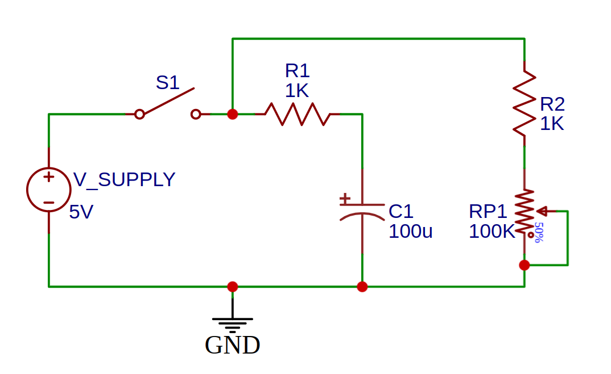
รูป: ผังวงจร (วาดด้วยซอฟต์แวร์ EasyEDA) เพื่อสาธิตการอัดและคายประจุของตัวเก็บประจุ โดยการกดหรือปล่อยปุ่ม
เริ่มต้นให้ตัวเก็บประจุไฟฟ้า ไม่มีประจุไฟฟ้า ดังนั้นจึงมีแรงดันไฟฟ้าตกคร่อมที่ตัวเก็บประจุเป็น 0V ถ้าสวิตช์ S1 ถูกกดค้างไว้ จะเปลี่ยนจากตำแหน่งเปิด (Open) มาเป็นตำแหน่งปิด (Close) ทำให้มีการชาร์จประจุเข้าไปในตัวเก็บประจุ แรงดันไฟฟ้าจะเพิ่มขึ้นจนมีระดับเท่ากับ 5V
ในขณะที่มีการชาร์จประจุ กระแสไฟฟ้าจะไหลจากแหล่งจ่าย 5V ผ่าน R1 ไปยังตัวเก็บประจุไฟฟ้า C1 ในขณะเดียวกันก็จะมีกระแสไหลผ่าน R2 และ RP1 เช่นกัน ขณะที่สวิตช์ S1 ถูกกดค้างไว้ ตัวต้านทาน R2 ในวงจรนี้ทำหน้าที่เป็นตัวจำกัดกระแส หาก RP1 ถูกปรับให้เป็น 0 โอห์ม กระแสที่ไหลจากแหล่งจ่ายไปยัง GND จะถูกจำกัดไว้ไม่ให้สูงเกินไปด้วย R2
ในอีกกรณีหนึ่ง ถ้าปล่อยปุ่ม S1 เปลี่ยนจากตำแหน่งปิด (Close) มาเป็นตำแหน่งเปิด (Open) แหล่งจ่าย 5V จะไม่มีผลต่อตัวเก็บประจุ และจะทำให้เกิดการคายประจุไฟฟ้าออกจากตัวเก็บประจุ โดยมีกระแสไฟฟ้าไหลจากตัวเก็บประจุ C1 ผ่าน R1 ไปยัง R2 และ RP1 ไปยัง GND ของวงจร แรงดันไฟฟ้าของตัวเก็บประจุ C1 จะค่อย ๆ ลดลงจนเป็น 0V อัตราการคายประจุของ C1 สามารถปรับได้ โดยการหมุนปรับตัวต้านทาน RP1
หากจะลองใช้ซอฟต์แวร์ AUTODESK Tinkercard Circuits ก็มีตัวอย่างดังนี้ ซึ่งมีข้อดี คือ สามารถปรับเปลี่ยนค่าของตัวต้านทาน RP1 และทำให้ผู้ใช้สามารถสังเกตเห็น อัตราการคายประจุได้ง่ายขึ้น หรือจะใช้ออสซิลโลสโคปเสมือนจริงวัดสัญญาณร่วมด้วยเพื่อสังเกตดูลักษณะของคลื่นสัญญาณ
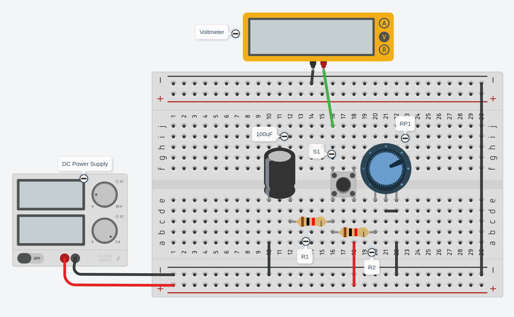
รูป: การต่อวงจรเสมือนจริงบนเบรดบอร์ด
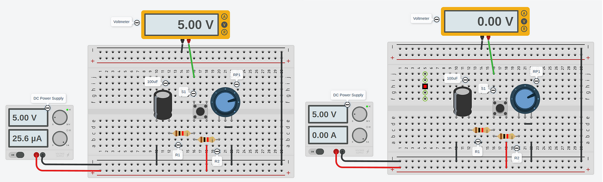
รูป: การจำลองการทำงานและวัดแรงดันไฟฟ้าช่วงที่มีการอัดประจุและคายประจุตามลำดับ
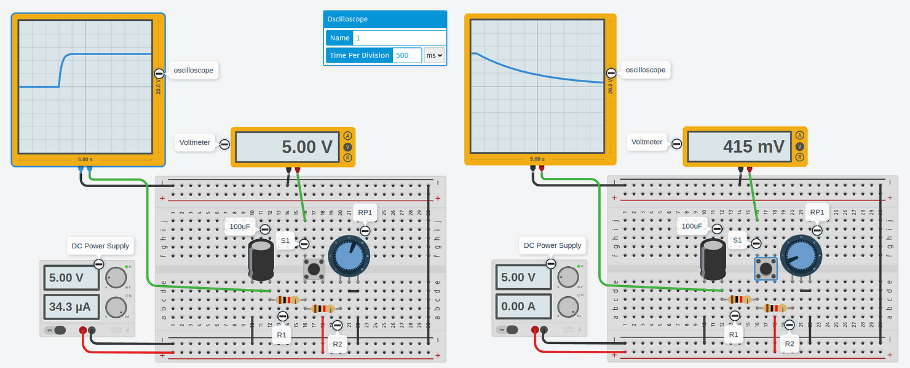
รูป: การจำลองการทำงานและวัดสัญญาณด้วยออสซิลโลสโคปเสมือนจริง
ถ้าได้ต่อวงจรทดลองบนเบรดบอร์ดและวัดสัญญาณด้วยออสซิลโสโคป ก็สามารถหาระยะเวลา ในช่วงที่แรงดันไฟฟ้าของตัวเก็บประจุ ได้ลดลงเป็นครึ่งหนึ่ง และทราบค่าความต้านทาน ก็สามารถคำนวณความจุของตัวเก็บประจุได้
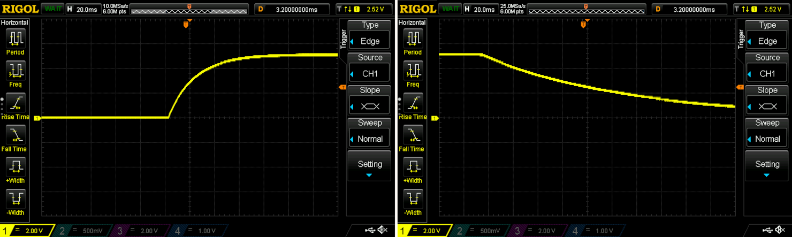
รูป: ตัวอย่างการต่อวงจรบนเบรดบอร์ด และวัดสัญญาณด้วยออซิลโลสโคป
▷ การจำลองการอัดและคายประจุของตัวเก็บประจุโดยใช้สวิตช์แบบ SPDT#
ผังวงจรต่อไปนี้สาธิตการใช้สวิตช์ S1 แบบ SPDT (Single-Pole Double-Throw) หรือ Slide Switch แทนปุ่มกดแล้วปล่อย โดยตำแหน่งของสวิตช์จะเป็นการเลือกว่า จะทำให้เกิดการอัดหรือคายประจุของตัวเก็บประจุ ตามผังวงจรต่อไปนี้
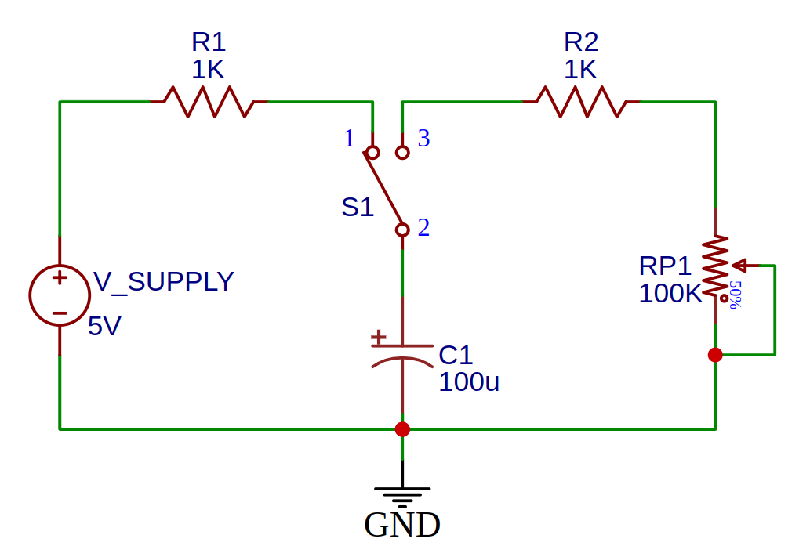
รูป: ผังวงจร (วาดด้วยซอฟต์แวร์ EasyEDA) เพื่อสาธิตการอัดและคายประจุของตัวเก็บประจุ โดยใช้สวิตช์เลื่อนตำแหน่ง
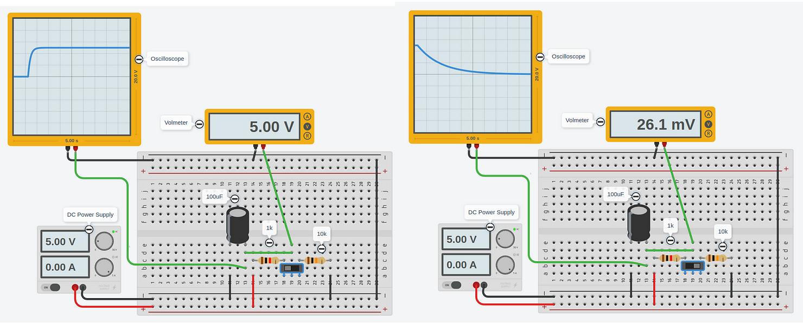
รูป: การต่อวงจรเสมือนจริงและจำลองการทำงานด้วย AUTODESK Tinkercad Circuits
▷ วงจรสาธิตการอัดและคายประจุของตัวเก็บประจุด้วยสัญญาณพัลส์#
การทำให้แรงดันไฟเลี้ยงเปลี่ยนระดับ เช่น ระหว่าง 0V กับ 5V โดยเว้นระยะเวลาคงที่ จะทำให้เกิดการอัดประจุและคายประจุสลับกันไป ดังนั้นในกรณีนี้ แรงดันไฟเลี้ยงจากแหล่งจ่าย มีลักษณะเป็นสัญญาณพัลส์ (Pulse)
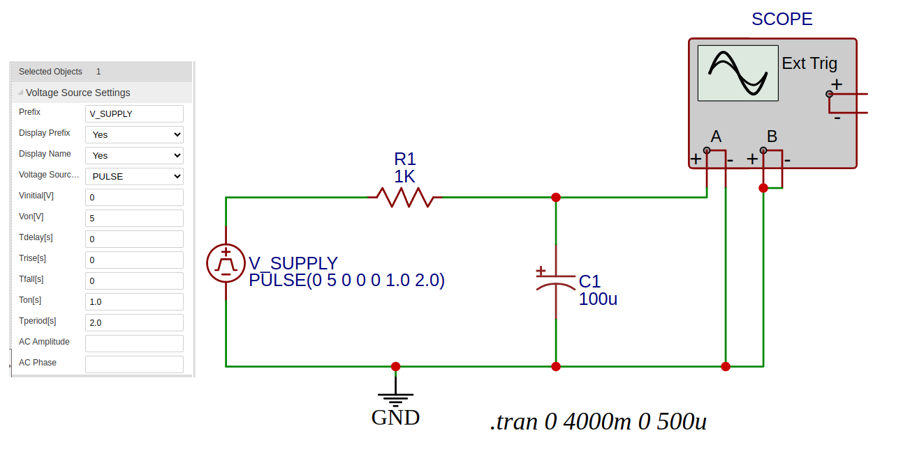
รูป: ผังวงจร (วาดด้วยซอฟต์แวร์ EasyEDA) เพื่อสาธิตการอัดและคายประจุของตัวเก็บประจุด้วยสัญญาณพัลส์
หากจำลองการทำงานของวงจรนี้ด้วยซอฟต์แวร์ EasyEDA จะได้รูปคลื่นสัญญาณต่อไปนี้
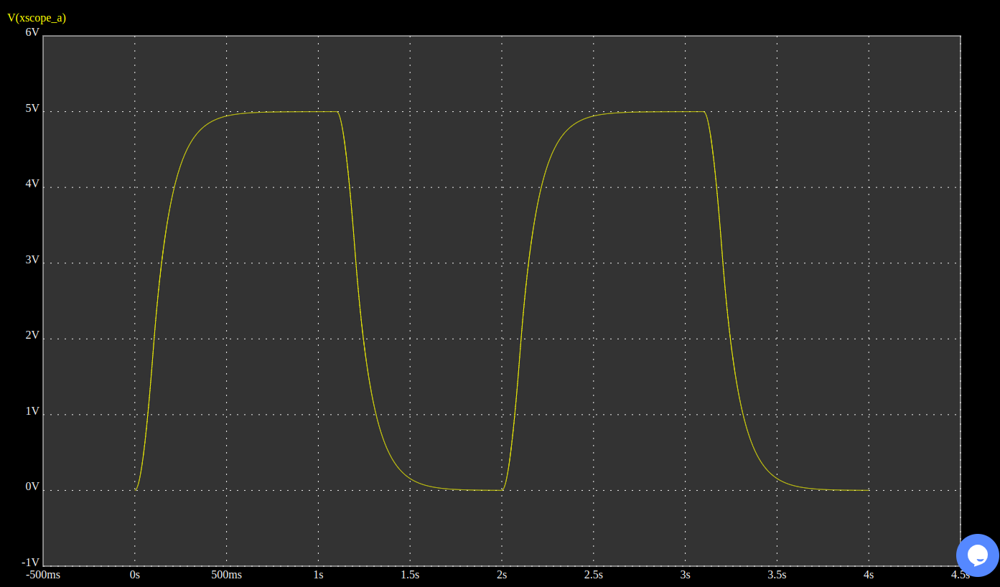
รูป: คลื่นสัญญาณไฟฟ้าซึ่งได้การวัดแรงดันไฟฟ้าของตัวเก็บประจุ ซึ่งจะเห็นช่วงการอัดและคายประจุสลับกัน
หากจะลองใช้ซอฟต์แวร์ AUTODESK Tinkercad Circuits ก็สามารถเลือกใช้ เครื่องกำเนิดสัญญาณเสมือนจริง (Function Generator) สร้างสัญญาณพัลส์ หรือสัญญาณคาบรูปสี่เหลี่ยม (Rectangular Waveform) ตั้งคาบเวลาให้กว้างพอสำหรับการอัดหรือคายประจุไฟฟ้า และใช้ออสซิลโลสโคปวัดสัญญาณการเปลี่ยนแปลงของแรงดันไฟฟ้า
▷ การใช้บอร์ด Arduino สำหรับการทดลองตัวเก็บประจุไฟฟ้า#
ถัดไปเป็นแนวทางการใช้บอร์ดไมโครคอนโทรลเลอร์ และการเขียนโปรแกรมด้วย Arduino API เพื่อควบคุมการทำงานของขา Digital I/O เช่น กำหนดสถานะลอจิกของขาเอาต์พุต ให้เป็นลอจิก HIGH และ LOW สลับกันไป สำหรับการอัดหรือคายประจุไฟฟ้าของตัวเก็บประจุ และการวัดแรงดันไฟฟ้า
จากรูปต่อไปนี้ จะเห็นได้ว่า มีการนำบอร์ด Arduino Uno มาต่อเพิ่ม โดยเชื่อมต่อ GND ของวงจรร่วมกัน และใช้ขา A0 สำหรับวัดแรงดันไฟฟ้าที่ตัวเก็บประจุ แต่การอัดหรือคายประจุ ยังเป็นการกดและปล่อยปุ่ม (ไม่ได้ใช้ขาเอาต์พุตของบอร์ด Arduino เป็นสัญญาณควบคุม)
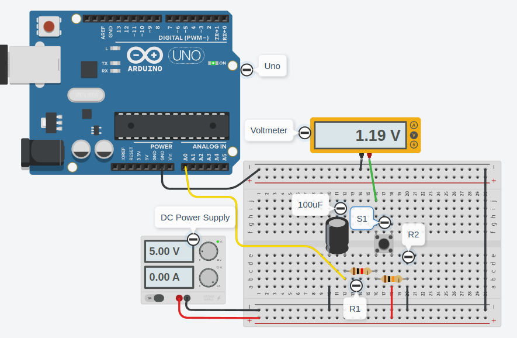
รูป: การต่อวงจรบนเบรดบอร์ดและใช้งานร่วมกับบอร์ด Arduino Uno
บอร์ด Arduino Uno / Nano ทำงานด้วยแรงดันไฟเลี้ยง VCC=+5V ดังนั้นสัญญาณไฟฟ้าจากภายนอก ทั้งสัญญาณดิจิทัล และ แอนะล็อก จะต้องมีแรงดันไฟเลี้ยงอยู่ในช่วง 0V และ 5V เพื่อหลีกเลี่ยงการทำให้อุปกรณ์อิเล็กทรอนิกส์ชำรุดเสียหาย
ถ้าใช้บอร์ด Arduino Uno / Nano แรงดันไฟฟ้าจะอยู่ที่ +5V (HIGH) และ 0V (LOW) สำหรับการทำงานของขา Digital I/O และเชื่อมต่อกับวงจร RC Series เพื่อการอัดหรือคายประจุไฟฟ้าตามลำดับ
- เอาต์พุต HIGH: ขา I/O ของชิปไมโครคอนโทรลเลอร์ ทำหน้าที่สำหรับการจ่ายกระแสไหลออก (Current Source)
- เอาต์พุต LOW: ขา I/O ของชิปไมโครคอนโทรลเลอร์ ทำหน้าที่รับกระแสไฟฟ้าไหลเข้า (Current Sink)
ขา Digital I/O ของชิป AVR สามารถรับหรือจ่ายกระแสได้ไม่เกิน 20mA (max.)
การกำหนดสถานะลอจิกและใช้งานขา I/O เป็นเอาต์พุต ก็มีคำสั่งของ Arduino API ให้ใช้งานดังนี้
pinMode( pin, mode )เป็นการใช้งานขา Digital I/O ตามหมายเลขของขาที่ได้เลือกใช้งาน และกำหนดทิศทางของสัญญาณหรือโหมดการใช้งาน เช่นOUTPUTหมายถึง เอาต์พุต และINPUTหมายถึง อินพุต เป็นต้นdigitalWrite( pin, value )เป็นการกำหนดค่าลอจิกของขา Digital I/O ตามหมายเลขของขาที่ได้เลือกใช้งาน เช่น HIGH จะได้เอาต์พุตมีระดับแรงดันประมาณ 5V และ LOW มีระดับแรงดัน 0V
การวัดแรงดันไฟฟ้าจากภายนอก โดยใช้ขา Analog Input ก็สามารถทำได้โดยใช้คำสั่งต่อไปนี้ แต่จะต้องเลือกใช้ขาของบอร์ด Arduino ที่สามารถใช้งานเป็นขาแอนะล็อกอินพุตได้ เช่น ขา A0, A1, A2, …
digitalRead( pin )จะได้ค่าเป็นเลขจำนวนเต็มในช่วง 0 ถึง 1023 (ความละเอียด 10 บิต)
ถ้าจะแปลงค่าที่อ่านได้ด้วยคำสั่ง digitalRead(...) ให้เป็นระดับแรงดันไฟฟ้า
ก็ใช้การคำนวณด้วยสเกลเชิงเส้นในช่วง 0V ถึง 5V
(ในกรณีนี้ แรงดันอ้างอิงสำหรับการอ่านค่าสัญญาณแอนะล็อกคือ AREF = 5V)
และตัวอย่างประโยคคำสั่งในภาษา C/C++ ดังนี้
float mV = analogRead(A0) * 5000.0f / 1024;
ประโยคคำสั่งนี้ มีการประกาศใช้ตัวแปรชื่อ mV (มิลลิโวลต์) ซึ่งมีชนิดข้อมูลเป็น float สำหรับเก็บค่าตัวเลขทศนิยม
และได้ค่าจากการทำคำสั่ง analogRead(A0) ที่ขาแอนะล็อกอินพุต A0
แล้วนำมาคูณกับ 5000 (มิลลิโวลต์) แล้วหารด้วย 1024
อีกกลุ่มคำสั่งของ Arduino API ที่สำคัญและมีการใช้งานบ่อยในการเขียนโค้ด คือ คำสั่งเกี่ยวกับการทำงานในเชิงเวลา เช่น
millis( )ได้ค่าตัวเลขจำนวนเต็ม ขนาด 32 บิต หน่วยเป็นมิลลิวินาที เริ่มนับตั้งแต่มีการรีเซตการทำงานของไมโครคอนโทรลเลอร์micros( )ได้ค่าตัวเลขจำนวนเต็ม ขนาด 32 บิต หน่วยเป็นไมโคริวินาที เริ่มนับตั้งแต่มีการรีเซตการทำงานของไมโครคอนโทรลเลอร์delay( msec )เป็นการหน่วงเวลาไวก่อนทำคำสั่งถัดไป ตามค่าตัวเลขจำนวนเต็มที่ต้องการหน่วยเป็นมิลลิวินาทีdelayMicroseconds( usec )เป็นการหน่วงเวลาไวก่อนทำคำสั่งถัดไป ตามค่าตัวเลขจำนวนเต็มที่ต้องการุ หน่วยเป็นไมโครวินาที
▷ การเขียนโค้ด Arduino วัดค่าความจุของตัวเก็บประจุไฟฟ้า#
แนวทางการเขียนโค้ด Arduino สำหรับการทดลองมีดังนี้
- ขั้นตอนที่ 1) อ่านค่าแรงดันอินพุตที่ขา A0 และตรวจสอบดูว่า แรงดันเพิ่มขึ้นจนใกล้ค่าสูงสุดแล้วหรือไม่ ถ้าใช่ ก็แสดงว่า มีการกดปุ่มให้เกิดการชาร์จประจุ ให้ไปทำขั้นตอนที่ 2 แต่ถ้าไม่ใช่ ให้ทำขั้นตอนซ้ำ
- ขั้นตอนที่ 2) อ่านค่าแรงดันอินพุตที่ขา A0 และตรวจสอบดูว่า แรงดันเริ่มลดลงแล้วหรือไม่ ถ้าใช่ ก็แสดงว่า มีการปล่อยปุ่มและเกิดการคายประจุ ให้ไปทำขั้นตอนที่ 3 และบันทึกเวลาเริ่มต้นไว้ แต่ถ้าไม่ใช่ ให้ทำขั้นตอนซ้ำ
- ขั้นตอนที่ 3) อ่านค่าแรงดันอินพุตที่ขา A0 และตรวจสอบดูว่า แรงดันเริ่มลดลงมาครึ่งหนึ่งแล้วหรือไม่ ถ้าใช่ ให้บันทึกเวลาหยุด หาผลต่างเพื่อให้ได้ระยะเวลา แล้วนำไปคำนวณค่าความจุของตัวเก็บประจุ แล้วย้อนไปเริ่มที่ขั้นตอนที่ 1) ซ้ำใหม่ แต่ถ้าไม่ใช่ ให้ทำขั้นตอนซ้ำ
ตัวอย่างโค้ด Arduino Sketch สำหรับการสาธิต มีดังนี้
// Analog input pin for measuring the voltage across the capacitor
const int AIN_PIN = A0;
// The value for the discharge capacitor
const uint32_t R_DISCHARGE = (10000+1000); // 10k + 1k
void setup() {
Serial.begin(115200);
}
// The current value, the value value
// and the half value of the input voltage
uint16_t value, last_value = 0, half_value;
uint8_t state = 0; // the current state of the FSM
uint32_t t_start; // the start time (in usec)
uint8_t cnt = 0; // the counter
void loop() {
// Read the analog input
value = analogRead(AIN_PIN);
// This is a finite-state machine (FSM).
switch( state ) {
case 0:
if (last_value < value && value > 1020 && ++cnt > 2) {
Serial.println("Charging...");
cnt = 0; // Reset the counter
state = 1; // Go to state 1
}
break;
case 1:
if (last_value > value && value < 1000 && ++cnt > 2) {
t_start = micros(); // Save the start time
Serial.println("Discharging...");
half_value = value/2; // Compute the half value
cnt = 0; // Reset the counter
state = 2; // Go to state 2
}
break;
case 2:
// The current value has reduced and reached to the half value.
if ( value <= half_value ) {
// Compute the time duration
uint32_t t_delta = micros() - t_start;
// Compute the measured capacitance
String s = "Measured Capacitance: ";
float capacitance = t_delta/(0.6931472f*R_DISCHARGE);
s += capacitance;
s += " uF";
// Send the result as a string to the serial port
Serial.println( s.c_str() );
state = 0; // Go to state 0
}
break;
default:
state = 0;
}
last_value = value; // Update the saved value
delay(1);
}
การเขียนโค้ด Arduino Sketch และจำลองการทำงานเสมือนจริง สามารถทำได้ด้วย AUTODESK Tinkercad Circuits
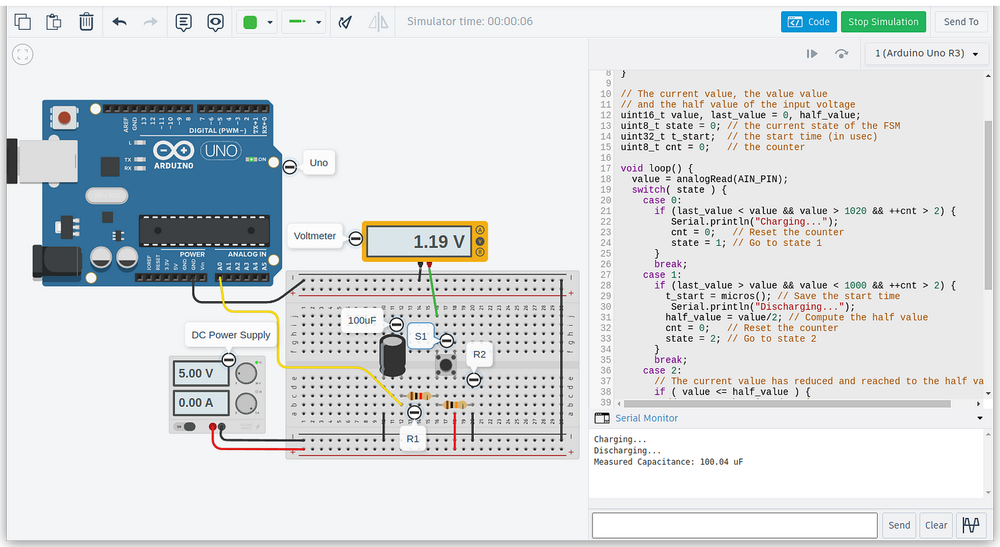
รูป: การจำลองการทำงานเสมือนจริง (C=100uF, R1=1k และ R2=10k)
ในการทดลองจริง ได้เลือกใช้ค่าความต้านทาน R1=10k และ R2=2.2k และเลือกใช้ตัวเก็บประจุ ชนิดอิเล็กทรอไลต์ (Electrolytic Capacitor) ที่มีค่าความจุ 10uF และ 100uF ตามลำดับ เมื่อวัดค่าด้วยมัลติมิเตอร์ Fluke 115 จะได้ค่าเท่ากับ 9.95uF และ 108.1uF ตามลำดับ
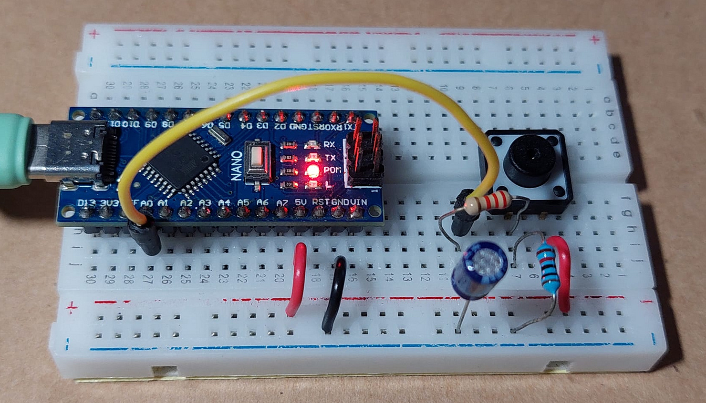
รูป: การต่อวงจรทดลองจริง โดยใช้บอร์ด Arduino Nano
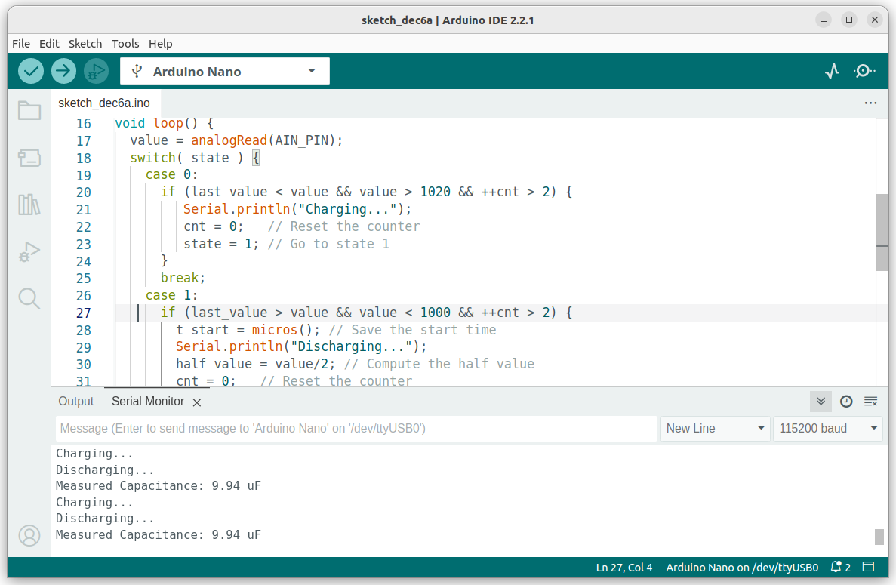
รูป: การทดลองกับตัวเก็บประจุ 10uF และค่าได้ 9.94uF
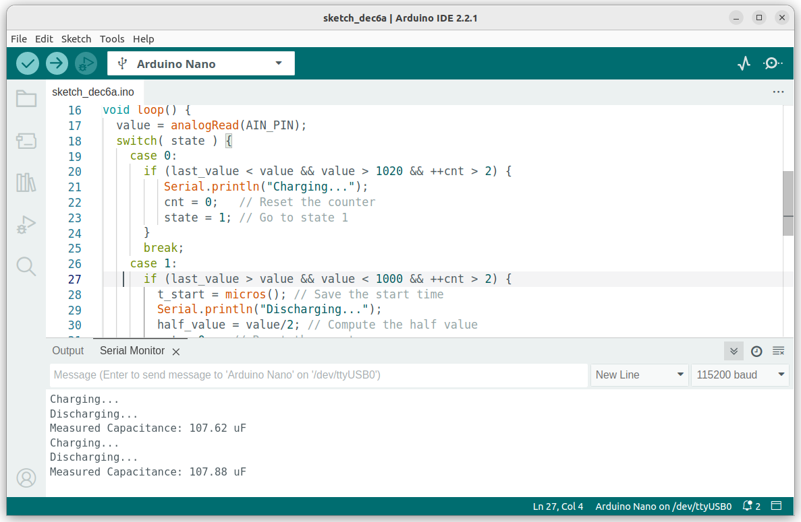
รูป: การทดลองกับตัวเก็บประจุ 100uF และค่าได้ประมาณ 107.8uF
▷ การใช้ขา I/O ของบอร์ด Arduino สำหรับการอัดและคายประจุไฟฟ้า#
ถ้าใช้ขา I/O ของไมโครคอนโทรลเลอร์ จำนวน 2 ขา แยกกัน ขาหนึ่งสำหรับการอัดประจุไฟฟ้า และอีกขาหนึ่งสำหรับการคายประจุไฟฟ้า และเลือกใช้ตัวต้านทานต่างกัน (R1 และ R2) สำหรับการอัดและคายประจุไฟฟ้าตามลำดับ ก็มีแนวทางดังนี้
- ถ้าใช้ค่าความต้านทาน R1 ต่ำกว่าสำหรับการอัดประจุ ก็จะทำให้ค่า RC และระยะเวลาการอัดประจุก็จะลดลง
- ถ้าใช้ค่าความต้านทาน R2 สูงกว่าสำหรับการคายประจุ ก็จะทำให้ค่า RC และระยะเวลาการอัดประจุก็จะเพิ่มมากขึ้น
ขา Digital I/O ของชิป AVR บนบอร์ด Arduino มีค่าความต้านทานภายใน ประมาณ 25Ω ถ้าใช้งานเป็นเอาต์พุต และมากกว่า 1MΩ ถ้าใช้งานเป็นอินพุต (High-impedance Input)
การจับเวลาและวัดแรงดันไฟฟ้าทำได้ทั้งในช่วงการอัดประจุและคายประจุไฟฟ้า แต่ถ้า R2 มีค่ามากกว่า R1 หลายเท่า ก็แนะนำให้ทำในช่วงการคายประจุ ซึ่งมีแรงดันไฟฟ้าลดลง และมีแนวทางดังนี้
กำหนดให้ CHARGE_PIN และ DISCHARGE_PIN ของบอร์ด Arduino
เป็นขาเอาต์พุตที่เลือกใช้งาน เช่น เลือกใช้ขา 2 และ 3
และใช้ขาแอนะล็อก-อินพุต AIN_PIN โดยเลือกใช้ขา A0
ลำดับขั้นตอนของการทำซ้ำ
ขั้นตอนที่ 1) การชาร์จประจุ
- กำหนดให้ขา
DISCHARGE_PINเป็นอินพุต - กำหนดให้ขา
CHARGE_PINเป็นเอาต์พุตและมีค่าเป็นHIGHเพื่อเริ่มต้นการชาร์จประจุ ด้วยแรงดันไฟฟ้าที่ระดับ 5V โดยประมาณ ผ่านตัวต้านทาน R1 ไปยังตัวเก็บประจุ - หน่วงเวลา เช่น 500 มิลลิวินาที เพื่อให้เกิดการชาร์จประจุไฟฟ้าจนเต็ม
- กำหนดให้ขา
CHARGE_PINเป็นอินพุต เพื่อหยุดการชาร์จประจุ แล้วไปทำขั้นตอนที่ 2
ขั้นตอนที่ 2) การคายประจุ
- กำหนดให้ขา
DISCHARGE_PINเป็นขาเอาต์พุตและมีค่าเป็นLOWเพื่อทำให้เกิดการคายประจุจากตัวเก็บประจุ และมีกระแสไหลจากตัวเก็บประจุผ่านตัวต้านทาน R2 ไปยัง GND - อ่านค่าแรงดันเริ่มต้น กำหนดค่าแรงดันครึ่งของแรงดันเริ่มต้น บันทึกเวลาเริ่มต้น แล้วไปทำขั้นตอนที่ 3
ขั้นตอนที่ 3) การตรวจสอบเงื่อนไขและวัดระยะเวลา
- ทำซ้ำเพื่ออ่านค่าจากขา
AIN_PINด้วยคำสั่งanalogRead()จนกว่า ค่าที่ได้ลดลงจนถึงค่าแรงดันครึ่งหนึ่งจากจากเริ่มต้น เมื่อตรวจสอบเงื่อนไขแล้วเป็นจริง ให้บันทึกเวลาจบ แล้วนำไปคำนวณระยะเวลา และค่าความจุของตัวเก็บประจุตามลำดับ - แสดงค่าความจุที่คำนวณได้เป็นข้อความผ่านทางพอร์ตอนุกรม
Serial - หน่วงเวลาไว้เพื่อให้มีการคายประจุ ให้ได้แรงดันไฟฟ้าลดลงเป็น 0V แล้วไปทำขั้นตอนที่ 1 ซ้ำ
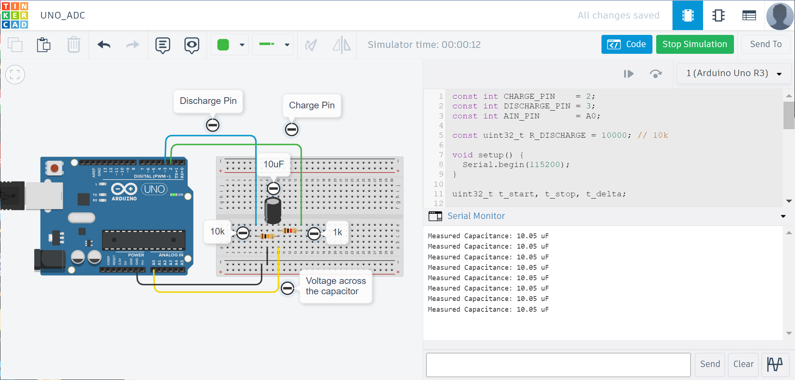
รูป: ตัวอย่างการต่อวงจรเสมือนจริง
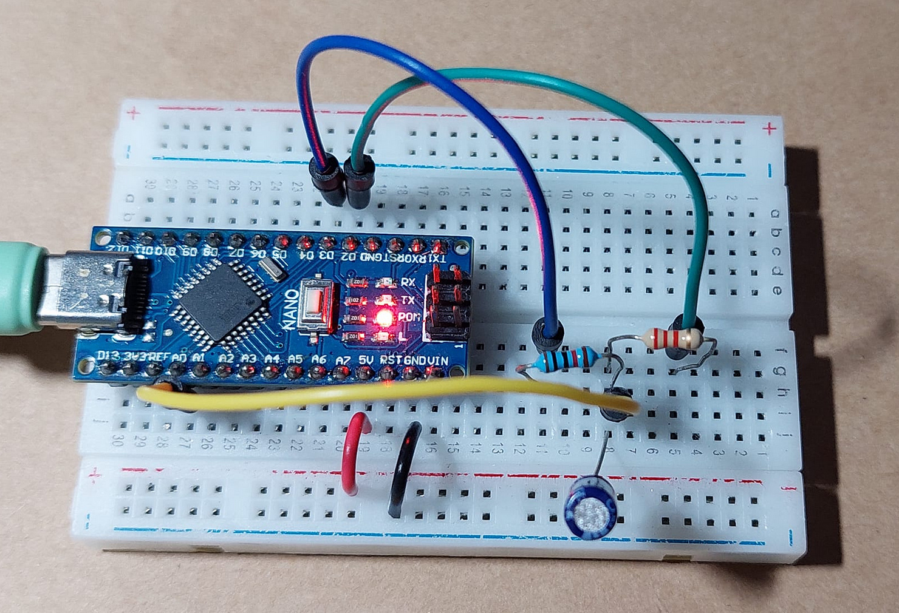
รูป: ตัวอย่างการต่อวงจรทดลองจริงบนบนเบรดบอร์ด
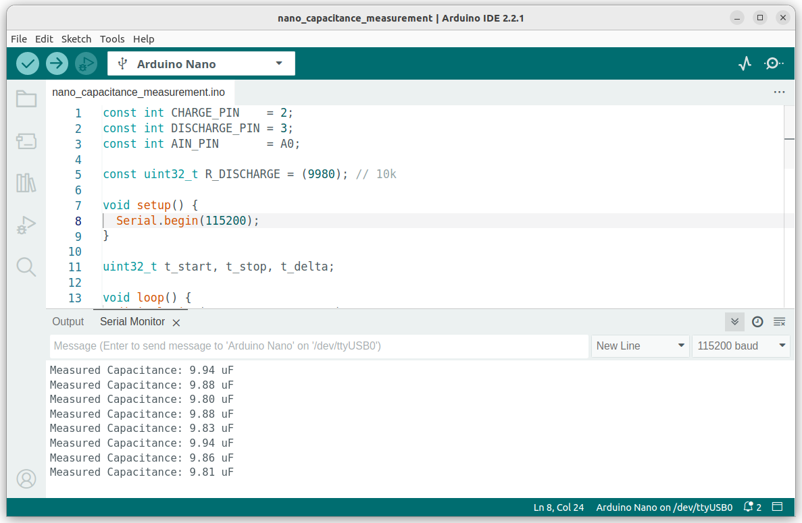
รูป: การทดลองการทำงานโค้ด Arduino เมื่อทดลองวัดความจุของตัวเก็บประจุ 10uF
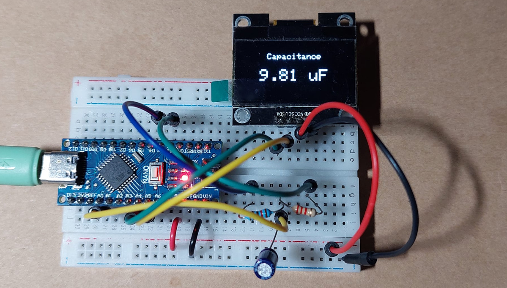
รูป: ตัวอย่างการต่อโมดูลแสดงผลกราฟิกแบบ OLED I2C เพื่อแสดงค่าความจุที่วัดได้ของตัวเก็บประจุ
▷ กล่าวสรุป#
บทความนี้นำเสนอแนวทางการทดลองเกี่ยวกับการวัดค่าความจุของตัวเก็บประจุไฟฟ้าหรือคาปาซิเตอร์ โดยใช้ซอฟต์แวร์จำลองการทำงานของวงจร และใช้บอร์ด Arduino เพื่อวัดแรงดันไฟฟ้า ในขณะที่เกิดการคายประจุไฟฟ้า และคำนวณค่าความจุของตัวเก็บประจุ
This work is licensed under a Creative Commons Attribution-ShareAlike 4.0 International License.
Created: 2023-12-06 | Last Updated: 2023-12-07